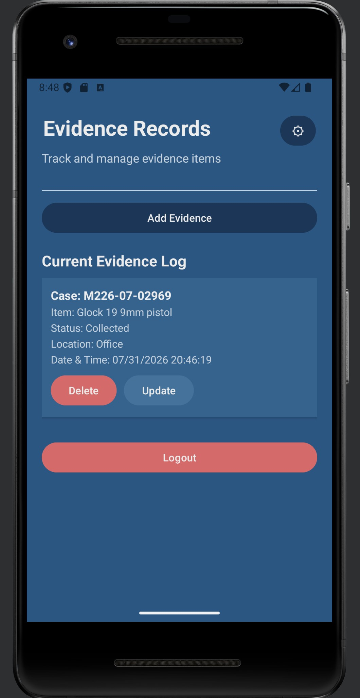
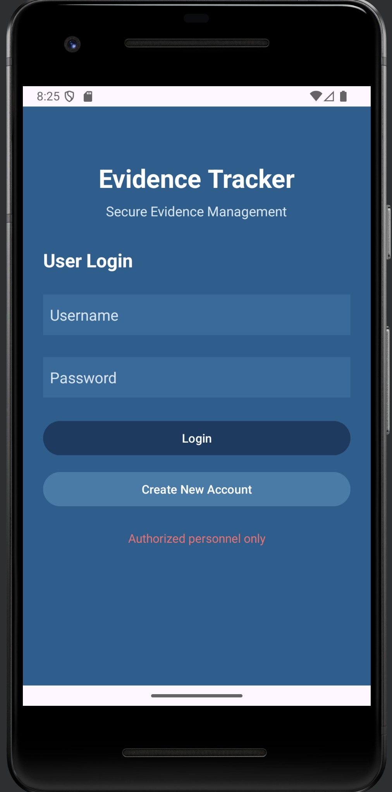
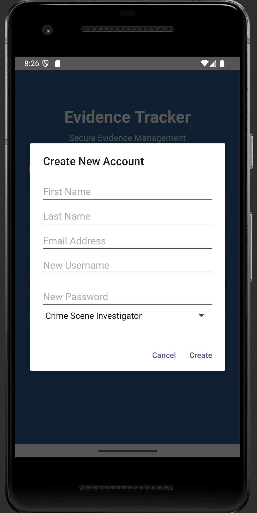
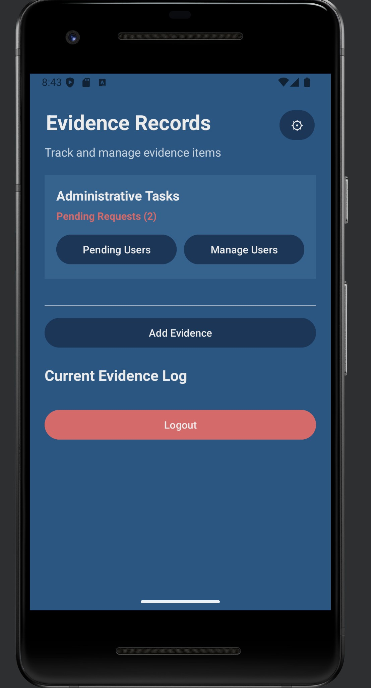
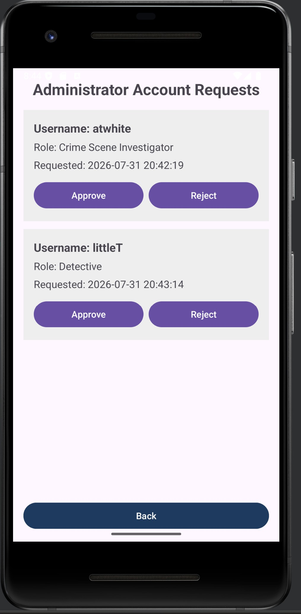
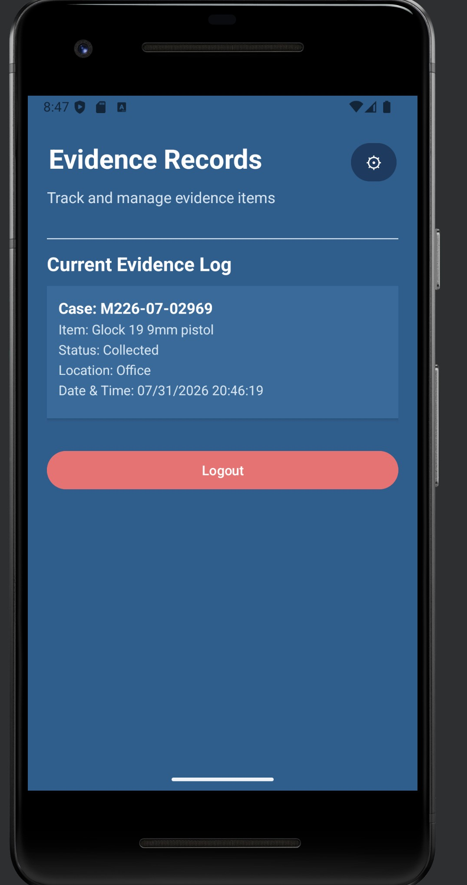
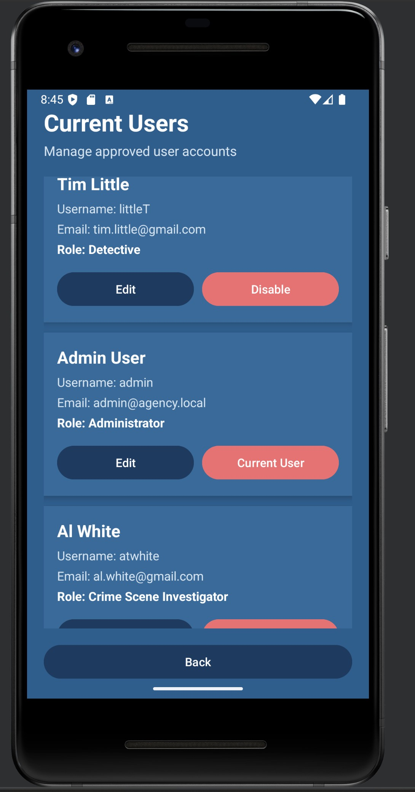

Crime Scene Investigator

CS 499 Computer Science Capstone
Enhancement One
This enhancement focused on redesigning the original CS 360 inventory management application into a secure Android-based Evidence Tracker. The software architecture was expanded to support user authentication, administrator-controlled account approval, role-based authorization, and an interface tailored to evidence management.
These improvements strengthened the usability, maintainability, and security of the application while aligning the system more closely with real-world evidence management workflows.
The enhanced application requires users to authenticate before accessing evidence records. The login screen restricts the system to authorized personnel and provides a separate option for new users to request an account.
During registration, users enter identifying information and select an organizational role. The account is not immediately activated. Instead, it remains pending until an administrator reviews the request.


A new administrator approval workflow prevents account registration from automatically granting application access. New accounts remain in a pending state until an administrator reviews the request.
The main administrator dashboard displays the number of requests awaiting review. Administrators can then open the pending-requests page and approve or reject each account based on the requested role and user information.


Role-based access control limits application functions according to each user's responsibilities. Crime Scene Investigators can add and update evidence records, while Detectives receive read-only access. Administrative functions remain limited to approved administrators.


Administrators have access to a dedicated user management interface where approved accounts can be reviewed, edited, or disabled. Each account displays the user's name, username, email address, and assigned role.
The interface also identifies the currently logged-in administrator. This distinction helps prevent unintended account changes and supports safer administrative control.

The redesigned application now supports multiple user types with clearly defined permissions. Authentication protects evidence records from unauthenticated access, while the approval workflow gives administrators control over who can enter the system.
The user interface also communicates available functions according to the active role. Users are not simply warned that an action is restricted; unavailable controls are removed from their interface. This creates a more usable design while reducing opportunities for unauthorized actions.
Redesigning the original inventory management application required significantly more than changing its appearance. The enhancement introduced authentication, authorization, administrator approval, and evidence-specific workflows that changed how users interact with the system.
Implementing these features required careful planning of application logic, database interactions, and user permissions so that each role could access only the functions appropriate to its responsibilities. These improvements produced a more secure, maintainable, and realistic application while demonstrating software engineering principles that extended beyond the original project requirements.